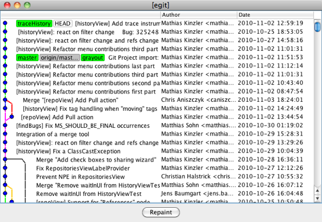

| JGit User Guide | ||
|---|---|---|
|
|
||
| Concepts | ||
If you're new to Git or distributed version control systems generally, then you might want to read Git for Eclipse Users first. If you need more details and background read the book Pro Git.
Although you are probably interested in JGit because you want to integrate it into an existing application or create a tool, JGit is more than simply a Java library for working with git repository. So before diving into the different aspects of the library let's take JGit for a spin.
You are probably familiar with the git command line interface (CLI) that can be used from the shell or in scripts. JGit comes with its own small CLI, which, although not as feature-full as the git CLI, is a good way to showcase what JGIt can do. Furthermore, the programs serve as an excellent source of inspiration for how to accomplish different tasks.
Assuming that you have the EGit git repository cloned and ready, build the jgit binary by running the jgit maven build (see the Contributor Guide):
~/src/jgit$ mvn clean install
Find the jgit binary here (path relative to root of working tree of your clone of the jgit repository):
org.eclipse.jgit.pgm/target/jgit
Check your build by running the "version" command:
prompt$ ./jgit version jgit version 0.10.0-SNAPSHOT
If you want to use jgit frequently you may consider to ease running it via a symbolic link (usually goes under /usr/local/bin)
sudo ln -s /path/to/jgit /usr/local/bin/jgit
When given the -h flag, commands provide a helpful message listing what flags they support.
prompt$ ./jgit version -h jgit version [--help (-h)]
--help (-h) : display this help text
Running jgit with no arguments lists the most commonly used commands.
prompt$ ./jgit jgit --git-dir GIT_DIR --help (-h) --show-stack-trace command [ARG ...]
The most commonly used commands are: branch List, create, or delete branches clone Clone a repository into a new directory commit Record changes to the repository daemon Export repositories over git:// diff Show diffs fetch Update remote refs from another repository init Create an empty git repository log View commit history push Update remote repository from local refs rm Stop tracking a file tag Create a tag version Display the version of jgit
The commands are modeled after their corresponding command in the git CLI. We will not cover all the commands here, but simply give some examples.
jgit also provides a number of debug and test commands, to list all the available commands run
prompt$ ./jgit debug-show-commands
Before inspecting the most recent commits, you probably want to know which branches the repository contains and what branch is currently checked out. Using the branch commands -v flag, you get a small summary of branches, their revision, and the first line of the revision's commit message.
prompt$ ./jgit branch -v master 4d4adfb Git Project import: don't hide but gray out existing projects * traceHistory 6b9fe04 [historyView] Add trace instrumentation
The log command, like git-log(1), shows the commit log. For example,
prompt$ ./jgit log --author Matthias --grep tycho master commit 482442b599abf75b63b397680aaff09c4e48c0ed Author: Matthias Sohn <matthias.sohn@sap.com> Date: Fri Oct 08 10:58:52 2010 +0200
Update build to use tycho 0.10.0 ...
will show you all commits in the "master" branch, where the author name matches "Matthias" and the commit messages contains the word tycho. More search criteria to filter the commit log, such as committer name, can be given.
Finally, to show some of the graphical capabilities of JGit, we will end this small tour by launching the graphical log tool.
prompt$ ./jgit glog
This should give you a window with the revision graph plotted to the left and three columns containing the first line of the message, the author name, and the commit date.

|
|
||
| Concepts |